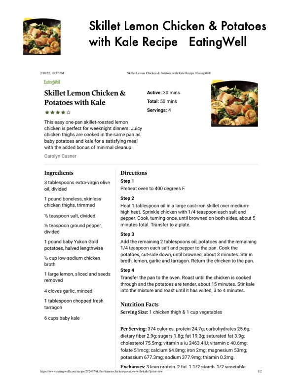

Skillet Lemon Chicken & Potatoes

Original cookbook page 274
Ingredients
- 3 tablespoons extra-virgin olive
- oil, divided
- 1 pound boneless, skinless
- chicken thighs, trimmed
- % teaspoon salt, divided
- teaspoon ground pepper,
- divided
- 1 pound baby Yukon Gold
- potatoes, halved lengthwise
- % cup low-sodium chicken
- broth
- 1 large lemon, sliced and seeds
- removed
- 4 cloves garlic, minced
- 1 tablespoon chopped fresh
- tarragon
- 6 cups baby kale
- 1/4 teaspoon each salt and pepper to the pan. Cook the
Instructions
- Preheat oven to 400 degrees F.
- Heat 1 tablespoon oil in a large cast-iron skillet over medium-
- high heat. Sprinkle chicken with 1/4 teaspoon each salt and
- pepper. Cook, turning once, until browned on both sides, about 5
- minutes total. Transfer to a plate.
- Add the remaining 2 tablespoons oil, potatoes and the remaining
- 1/4 teaspoon each salt and pepper to the pan. Cook the
- potatoes, cut-side down, until browned, about 3 minutes. Stir in
- broth, lemon, garlic and tarragon. Return the chicken to the pan.
- Transfer the pan to the oven. Roast until the chicken is cooked
- through and the potatoes are tender, about 15 minutes. Stir kale
- into the mixture and roast until it has wilted, 3 to 4 minutes.
Recipe #274 from collection